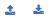

The monitored networks page lists all the monitored networks in the eyeInspect Command Center and allows the User to manage and add monitored networks.
To access the Monitored Networks page, from the top navigation menu, go to ASSETS > Monitored Networks.
The Monitored Networks page has the following two options in the secondary nav bar:
Use the Add monitored network option to add a new monitored network. On-screen help for the Address and VLAN IDs fields is available upon hovering over the question mark icon in the right corner of these fields. Note that a sensor can be associated with a monitored network in the sensor's settings.
Select a monitored network from the table to enable the Delete option in the secondary navigation bar.
In addition, the following actions can be performed with monitored networks:
Select a monitored network from the table to open the Edit monitored network dialog.
At the top right corner above the Monitored networks table, there are two icons - these represent the CSV Import and CSV Export functionalities respectively -

Users can export the existing monitored eyeInspect networks, edit them offline, and import them back into the Command Center. Note that any modifications to the "Associated sensors" column in the exported CSV file will be ignored when the CSV file is imported back into eyeInspect. The "Associated sensors" information can only be modified via the Command Center.